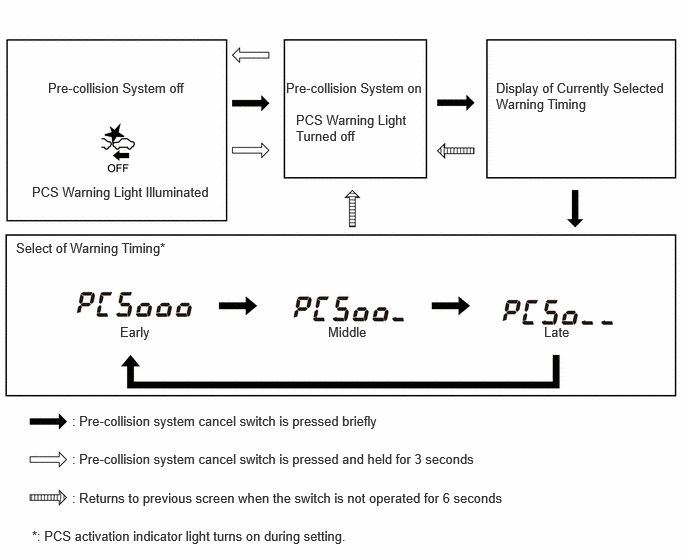

0.5,0.833 2,1.25 1.5,0.417 10 false Pre-collision System off 0.333,1.917 2.25,2.25 1.917,0.333 10 false PCS Warning Light Illuminated 2.979,0.833 4.479,1.167 1.5,0.333 10 false Pre-collision System on 5.167,0.833 7,1.5 1.833,0.667 10 false Display of Currently Selected Warning Timing 0.167,2.5 1.917,2.833 1.75,0.333 10 false Select of Warning Timing* 1.25,3.375 1.667,3.708 0.417,0.333 10 false Early 3.417,3.375 3.917,3.708 0.5,0.333 10 false Middle 5.667,3.375 6,3.708 0.333,0.333 10 false Late 0.75,4.698 5.083,5.031 4.333,0.333 10 false : Pre-collision system cancel switch is pressed and held for 3 seconds 0.75,4.302 4.083,4.635 3.333,0.333 10 false : Pre-collision system cancel switch is pressed briefly 0.75,5.104 5.333,5.438 4.583,0.333 10 false : Returns to previous screen when the switch is not operated for 6 seconds 3.083,1.167 4.333,1.833 1.25,0.667 10 false PCS Warning Light Turned off 0.333,5.5 3.75,5.823 3.417,0.323 10 false *: PCS activation indicator light turns on during setting.